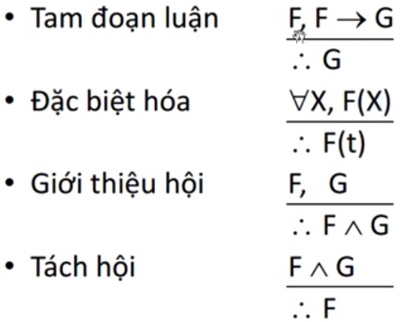
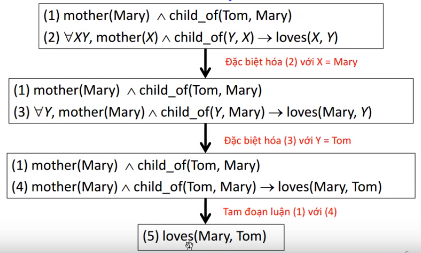
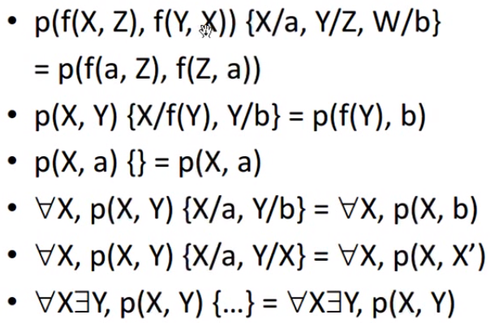
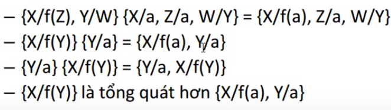
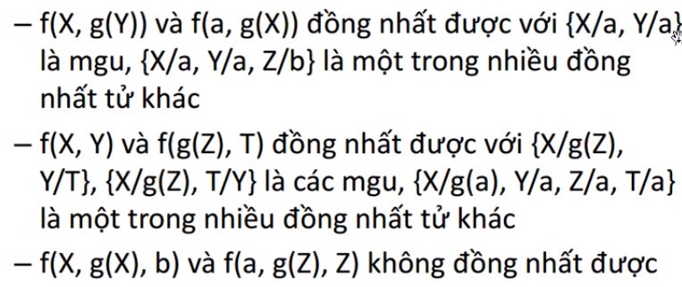

Về trang chủ
Suy điễn logic, phép thế, phép đồng nhất trong logic hạn định
I. Suy diễn logic
- Suy diễn là quá trình rút ra kết luận (conclusion) từ các tiền đề (premises)
+ Dãy các bước dẫn ra kết luận từ các tiền đề
+ Kết luận là hê quả logic của các tiền đề
- Luật suy diễn là qui tắc được dùng tại mỗi bước suy diễn
- Luật suy diễn được hình thức hóa từ các nguyên tắc suy luận của con người
- Vài luật suy diễn tự nhiên hay dùng:

-Ví dụ:

II. Hệ suy diễn
- Hệ suy diễn là 1 hệ thống các luật suy diễn cùng với cách thức áp dụng chúng để suy diễn
- Cho K là 1 cơ sở tri thức, S là 1 câu. Nếu hệ thống suy diễn H
+ Dẫn ra được kết luận S từ các tiền đề K thì kí hiệu K |-HS
+ không dẫn ra được S từ các tiền đề K thì kí hiệu K \-HS
- Một hệ suy diễn H được gọi là:
+ đúng (sound) nếu K |-HS thì K |= S
+ đủ (complete) nếu K |= S thì K |-HS
với mọi cơ sở tri thức K và mọi câu S
- Ví dụ:
+ Xét hệ suy diễn H mà với mọi cơ sở tri thức K, mọi câu S đều có K |-HS
+ Xét hệ suy diễn I mà với mọi cơ sở tri thức K, mọi câu S đề có K \-HS
+ H là đủ nhưng không đúng
I là đúng nhưng không đủ
III. Phép thế
- Phép thế là tập hữu hạn các cặp {X1/t1,.., Xn/tn}, với ti là các hạng tử, Xi là các biến, Xi ≠ ti và Xi ≠ Xj với i ≠ j
+ Nếu n = 0 thì gọi là phép rỗng, kí hiệu ℇ
- Gọi Φ = {X1/ t1,..., Xntn} là 1 phép thế, E là 1 hạng tử/ công thức. Kết quả của việc áp Φ lên E, kí hiệu EΦ, là 1 hạng tử/ công thức có được
bằng cách thay thế đồng thời các ti vào mọi xuất hiện tự do của Xi trong E
+ EΦ được gọi là 1 biểu hiện (instance) của E
- Ví dụ:

- Cho các phép thế:
Φ = {X1/S1,...,Xm/Sm}
б = {Y1/T1,...,Yn/Tn}
- Kết hợp của Φ với б, kí hiệu Φб, là phép thế tạo từ tập:
{X1/S1б,...,Xm/Smб,Y1/T1,...,Yn/Tn}
bằng cách xóa bớt các XiSiб (1≤ i ≤m)
và xóa bớt Yj/tj nếu Yj ∈ {X1,...,Xn}(1 ≤ j ≤ m)
- Phép thế Φ được nói là tổng quát hơn phép thế б khi và chỉ khi tồn tại phép thế γ sao cho б = Φγ
- Gọi Φ, б, γ là các phép thế và E là 1 hạng tử/ công thức. Thì:
+ E(Φб) = (EΦ)б
+ (Φб)γ = Φ(бγ)
+ ℇΦ = Φℇ = Φ
- Ví dụ:

IV. Đồng nhất (Unification)
- Hai hạng tử/ công thức E1,E2 được gọi là đồng nhất được nếu có phép thế Φ sai cho E1Φ = E2Φ, Φ được gọi là đồng nhất tử (unifer) của E1 và E2
+ ĐỒng nhất tử б của E1,E2 được gọi là đồng nhất tử tổng quát (mgu) nếu nó tổng quát hơn mọi đồng nhất tử khác của E1, E2
+ Lưu ý: Hai hạng tử/ công thức là bằng nhau (=) khi và chỉ khi chúng giống nhau hoàn toàn về hình thức
- Ví dụ:

-Thủ tục đồng nhất:
+ Nhân 2 hạng tử/ công thức, cho biết có đồng nhất được không, nếu có thì cho biết mgu
+ Thực hiện đệ qui trên cấu trúc của các hạng tử/ công thức
+ Kiểm tra các phép thế có tương hợp (compatible) hay không
+ Lựa chọn có kiểm tra biến là phần con thực sự của hạng tử không
.Ví dụ: X đồng nhất với f(X)?
Yes, nếu không kiểm tra
No, nếu có kiểm tra (occurs check)
V. Kết
- Chúng ta tạm dừng tại đây nha các bạn. Bài kế tiếp sẽ tìm hiểu về Hợp giải SLD, Cây SLD, Hệ suy diễn Prolog